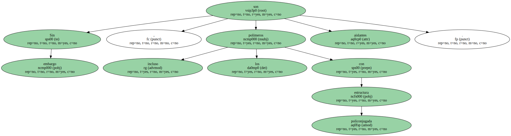
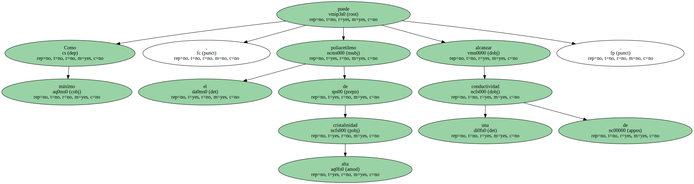
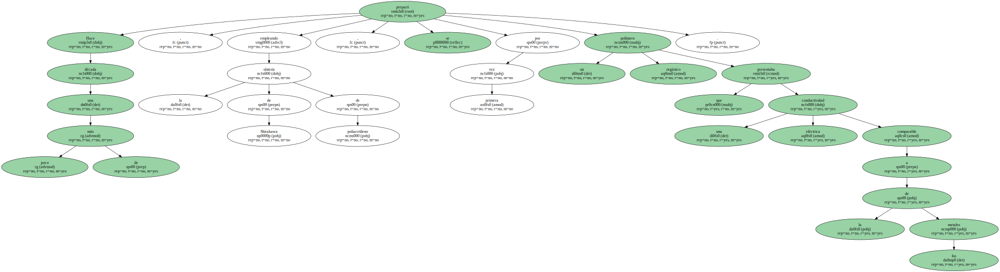
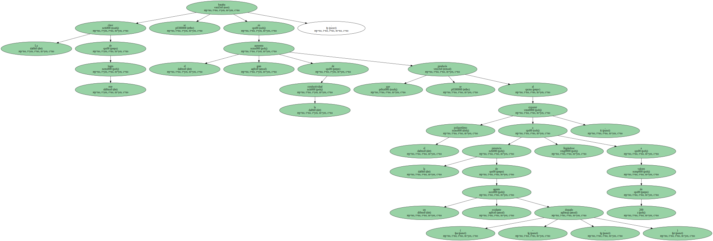
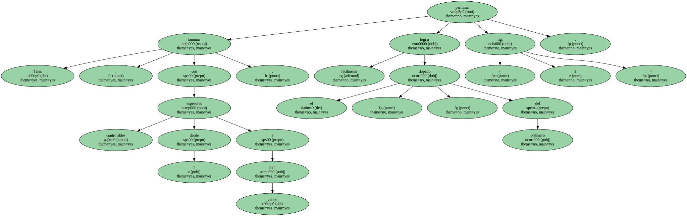
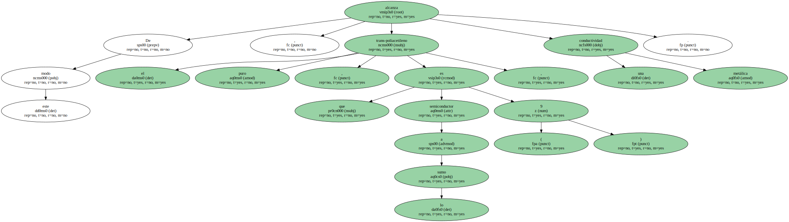
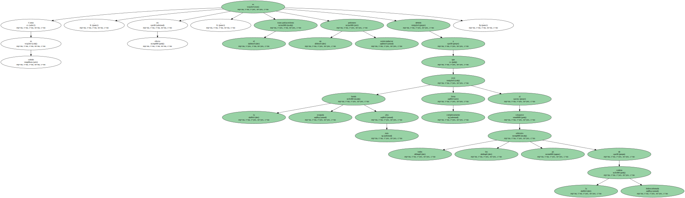
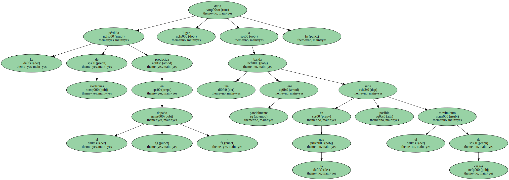
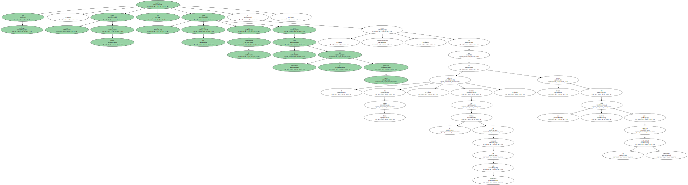

Sin embargo , incluso los polímeros con estructura policonjugada son aislantes.
Como máximo , el poliacetileno de alta cristalinidad puede alcanzar una conductividad de.
Hace poco más de una década , empleando la síntesis de Shirakawa de poliacetileno , se preparó por primera vez un polímero orgánico que presentaba una conductividad eléctrica comparable a la de los metales.
La clave de este logro se basaba en el gran aumento de la conductividad que se producía al exponer el poliacetileno a la presencia de un agente oxidante ( - dopado - ) , llegándose a valores de 200.
Supone el procedimiento de Shirakawa la polimerización del acetileno con catalizador de Ziegler-Natta , lo que permite obtener películas de polímeros de aspecto y brillo metálico.

Tales láminas , con espesores controlables desde 1 a varios mm , permiten lograr fácilmente el - dopado - del polímero ( fig. 1 ).
De este modo , el trans-poliacetileno puro , que es a lo sumo semiconductor ( 9 ) , alcanza una conductividad metálica.
Como es sabido , en efecto , el trans-poliacetileno es un polímero semiconductor debido a que la banda ocupada más alta está completamente llena al solaparse todos los orbitales pz de la cadena hidrocarbonada.
La pérdida de electrones producida en el - dopado - daría lugar a una banda parcialmente llena en la que sería posible el movimiento de cargas.
Sin embargo , esta teoría de bandas no justifica el valor tan elevado de la conductividad para el caso del poliacetileno y otros polímeros a causa , fundamentalmente , de que el número de spines libres , medido por la técnica de resonancia de spin electrónico , es mucho menor del que cabía esperar para justificar la conductividad observada.
